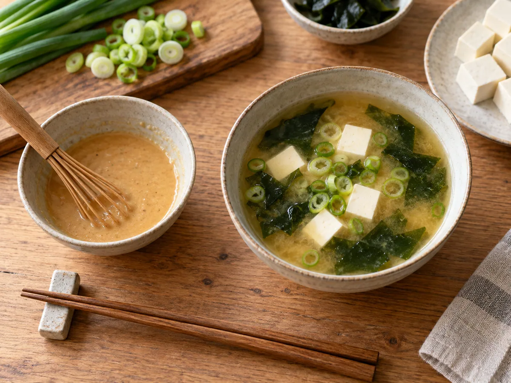

The supermarket shortcut says pale miso is mild and red miso is strong. That is useful for about five seconds—and then it starts failing. Color is shaped by ingredients, how soybeans are treated, fermentation time, temperature, and browning reactions. Two pastes that look alike can taste entirely different. The better way to shop is to consider grain, salt, age, and the dish in front of you.
Miso is a fermented seasoning typically made from soybeans, salt, and koji: a grain or soybean culture inoculated with Aspergillus oryzae. Koji supplies enzymes that break larger molecules into the sugars and amino acids responsible for sweetness, aroma, and savoriness.
Color is a clue, not a category system
In everyday English-language shopping, labels often group miso as white, yellow, or red. Those names help predict intensity, but Japanese classification also pays attention to the koji base. Japan's Ministry of Agriculture, Forestry and Fisheries describes three broad families: rice miso made with rice koji, barley miso made with barley koji, and soybean miso made with soybean koji. Within those families are regional styles with different salt levels and fermentation periods.
| Label you may see | Typical character | Good first uses | Watch for |
|---|---|---|---|
| White / shiro | Sweet, gentle, creamy | Dressings, light soup, glaze, sweets | Can be too sweet for a dark braise |
| Yellow / awase | Balanced, savory, adaptable | Everyday soup, marinades, sauces | “Awase” may be a blend, so taste varies |
| Red / aka | Robust, salty, fermented depth | Stews, mushrooms, beef, eggplant | A small amount can dominate delicate food |
| Barley / mugi | Fragrant, earthy, sometimes sweet | Vegetable soup, rustic dressings | Contains barley; not gluten-free |
| Soybean / mame | Dense, dark, concentrated umami | Long-simmered dishes, dengaku-style glaze | Firm flavor needs careful dosing |
White miso: sweetness before force
White miso usually contains a generous proportion of rice koji and ferments for a relatively short period. It can taste softly salty, noticeably sweet, and almost dairy-like in its roundness. That makes it a good bridge for cooks who find darker miso too assertive.
Whisk it with rice vinegar, neutral oil, and grated ginger for a dressing. Blend a spoonful into mashed sweet potato. Brush it onto salmon or eggplant near the end of cooking, when its sugars can caramelize without burning. In soup, white miso suits delicate dashi, tofu, young greens, and spring vegetables.
Do not assume “white” means unsalted. Brands vary. Taste a dab before seasoning the rest of the dish, and remember that reducing a sauce concentrates the salt even when the starting paste tastes mild.
Yellow and blended miso: the useful middle
Yellow miso is often the most flexible tub in a general home kitchen. It has enough fermentation character to season beans, roasted vegetables, chicken, and mushrooms, but usually will not overwhelm a vinaigrette or quick soup. Some packages labeled awase combine lighter and darker misos to create that middle range.
Use it in places where you might reach for Parmesan, anchovy, or a small splash of soy sauce. A teaspoon stirred into mushroom pan sauce deepens it without making the dish read as “miso flavored.” Mix it with softened butter for corn, cabbage, or toast. Thin it with hot pasta water before tossing with noodles so it disperses evenly.
Red miso: concentration and a longer shadow
Red miso is generally darker and more assertive, often because of longer aging and deeper browning, though the exact process depends on style. It brings roasted, fermented, sometimes faintly bitter notes. Think of it as a bass instrument: valuable for depth, but capable of flattening a quiet arrangement.
Pair it with ingredients that can answer back—beef, lamb, mushrooms, caramelized onion, winter squash, or charred cabbage. Begin with half the amount of a mild miso and add more after tasting. A blend of red and white miso often has more dimension than either alone: the pale paste supplies sweetness while the dark paste supplies length.
Barley and soybean miso deserve their names
Barley miso carries the grain's fragrance and may show a softly rustic sweetness. It is associated with several regional traditions, particularly in parts of Kyushu, Shikoku, and western Japan. Because barley contains gluten, it is not suitable for people who need a gluten-free miso; check labels, since small amounts of other grains can appear in blended products as well.
Soybean miso, made with soybean koji rather than rice or barley koji, can be exceptionally dark and concentrated. Hatcho-style miso is the best-known example outside Japan. Its dense, almost cocoa-like savoriness works in long-cooked stews and glossy glazes. Stirring a little into a lighter miso is often easier than using it alone.

How to add miso without losing control
Move some liquid aside
Ladle warm broth or sauce into a small bowl. A few tablespoons are enough. Working separately prevents a dense clump of paste from drifting around the pot.
Whisk until smooth
Add the miso to the small bowl and stir until no streaks remain. This slurry can be incorporated evenly and tasted as you go.
Return it gently
Stir the slurry into the main dish over low heat. For soup, avoid a prolonged hard boil after adding miso; fierce cooking can flatten its fresh aroma and make subtle flavors harder to notice.
Season afterward
Miso brings substantial salt. Add soy sauce or additional salt only after the paste has been fully dispersed.
Six uses beyond a bowl of soup
- Vinaigrette: whisk white miso with rice vinegar, sesame oil, neutral oil, and water.
- Roast-vegetable glaze: combine yellow miso, honey, and oil; brush on during the last part of roasting.
- Compound butter: blend miso with soft unsalted butter and scallions for corn, steak, or mushrooms.
- Bean seasoning: stir a spoonful into white beans with lemon and olive oil, reducing other salt.
- Pasta sauce: loosen miso with pasta water, then emulsify with butter and black pepper off heat.
- Caramel: add a small amount of white or yellow miso to caramel sauce for salt and fermented depth.
Miso burns readily when exposed to high direct heat because of its sugars and concentrated solids. In a marinade, wipe off heavy excess before searing. In a broiler glaze, apply it late and watch continuously. Dark spots can be delicious; blackened paste is simply bitter.
Buying and storing a tub
Look for a short ingredient list and choose a size you can reasonably finish. A package with visible texture is not inherently better than a smooth one; texture is a style choice. Unpasteurized miso may continue changing in the refrigerator, but “unpasteurized” is not automatically a guarantee of superior flavor.
Once opened, keep the surface covered and use a clean utensil. Pressing parchment or reusable wrap directly onto the paste limits air exposure and darkening. Miso keeps well refrigerated, though delicate aromas slowly fade. Follow the maker's date and storage instructions rather than assuming every regional style behaves identically.
Build a house blend
If two tubs feel excessive, begin with a balanced yellow or blended miso. If you cook with it often, add one pale and one dark style. Mix two parts mild miso with one part dark miso in a small jar, then adjust. The blend becomes a dependable base for soup while the separate pastes remain available for recipes that need either sweetness or intensity.
Take notes the first few times: brand, color, salt impression, sweetness, and favorite use. “Red miso” is too broad to predict every jar. Your own shorthand—“nutty and dry; good with mushrooms”—will guide dinner better than color alone.
Common questions
Is miso gluten-free?
Rice and soybean miso may be, but barley miso is not, and blended products can include wheat or barley. Read the ingredient list and certified labeling if gluten avoidance is medically necessary.
Can I substitute one miso for another?
Usually, if you adjust quantity and balance. Start with less dark miso in place of white. If replacing dark with white, expect more sweetness and less depth; add gradually and taste before changing salt.
Does miso have to stay refrigerated?
Follow the package. After opening, refrigeration is the safest default for maintaining flavor and quality. Keep it tightly covered and avoid introducing crumbs or wet utensils.
Ingredient classification and regional context were checked against Japan's Ministry of Agriculture, Forestry and Fisheries: Traditional Foods in Japan: soy sauce, miso, and other seasonings.